前言
公司的食堂真是太难吃了😭~
福州的物价真是太高了🤧~
于是试着自己学习做饭😎！
烹饪老师就靠豆包老师了🤩！
这是一个自己在出租屋烹饪的记录帖！
正文
7.25 速冻水饺
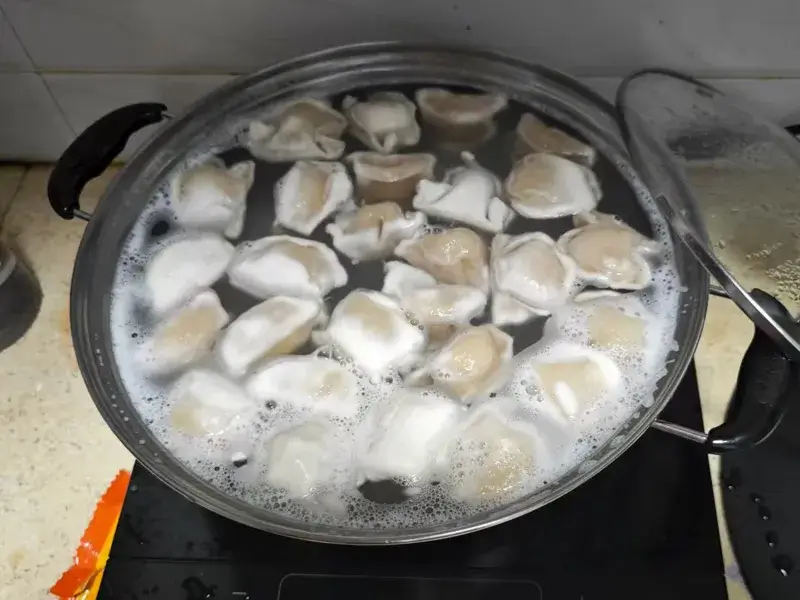
Tip
- 无需解冻，速冻饺子直接入冷水，水量没过饺子，可加 1 勺盐防粘。
- 开中火煮，水沸腾后用勺背轻推饺子防粘底，然后按 “两沸两加”：第一次沸加 1 碗凉水，再沸再加 1 碗，继续煮 2-3 分钟（素馅短点，肉馅稍长）。
- 见饺子浮起、表皮有弹性，就熟了，及时捞出。
煮东西先从最简单不用刀工不用调料的速冻水饺开始！但是有一次煮饺子怎么煮总是表皮泛白，口感也不好查了下是饺子冷冻太久了😵，估计拿出来还是要晾一晾稍微解冻一下吧。
8.27 速冻水饺 & 达道牛滑
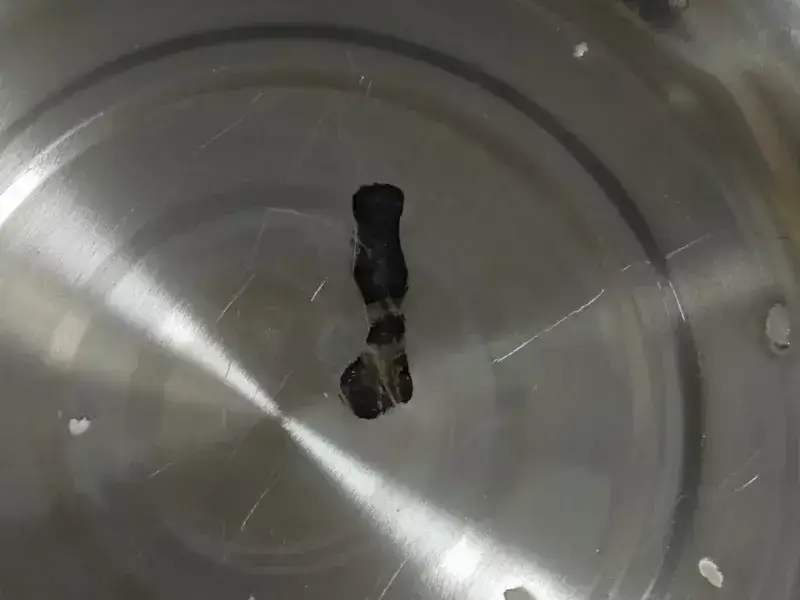
Caution
- 不要将水饺放在冰箱上层！
- 放入水饺后及时用筷子将粘锅的饺子挑起来！
上次冻得太死的水饺口感太差了！于是就很蠢地把水饺放在了冰箱上层一天再拿出来。结果水饺冒水了，又赶忙放到下层再冻上，结果煮好后一股酸味😭，只好全扔了。
还有一锅下饺子后没有及时把饺子挑起来，然后房间里就弥漫着一股糊味😭~这时候再处理锅已经黑了一小块，最后拿钢丝球和洗洁精处理掉了。
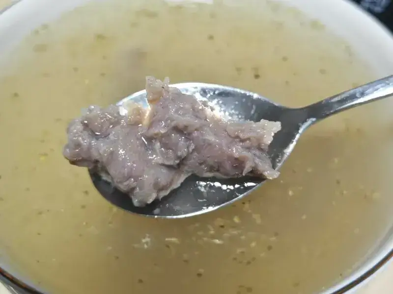
Tip
- 锅中加适量清水（或骨汤、鸡汤，更鲜美），大火烧开后转小火，保持水面微沸。
- 用勺子把牛肉滑一个个舀成小团，轻轻放入锅中（避免用力过猛冲散）。
- 待牛肉滑全部浮起（约煮 2-3 分钟），说明基本熟了。
- 加入准备好的配菜（紫菜、虾皮先放，葱花、香菜最后放）。
- 加适量盐、少许白胡椒粉、鸡精调味，搅拌均匀。
- 关火，滴几滴香油，撒上葱花和香菜即可。
买了包达道牛肉滑，好贵啊一包￥27.9，看量上也只够吃 2-3 餐，感觉没比外面便宜多少🤧。
第一次煮出来汤味道跟店里的一模一样！预制菜还是方便。后面几次水就加多了不好喝。
8.31 海鲜肉丸拉面
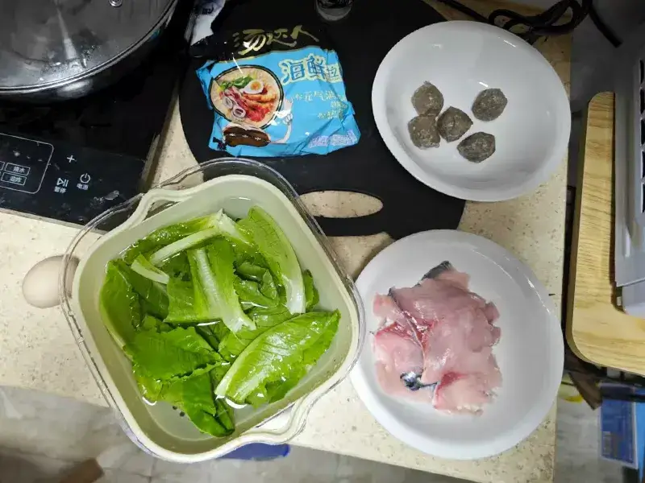
又去超市买了点好食材！罗马生菜不用担心熟不了，草鱼切片避免了刀工😎！再来包方便面和火锅料作为调味料。
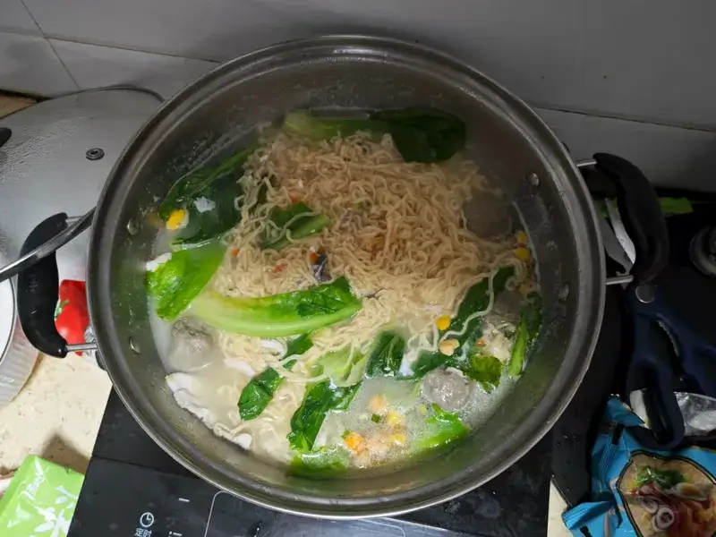
Tip
- 锅中加水烧开，先放牛筋肉丸煮 3 分钟至浮起，再下拉面饼煮 4 分钟（比原时间少 1 分钟，避免后续煮烂）。
- 放入草鱼切片，轻轻推散，煮 1-2 分钟至鱼片变白、完全熟透（避免久煮，否则肉质变柴）。
- 打入鸡蛋（荷包蛋 / 蛋花均可），加拉面所有调料包搅匀，最后放罗马生菜煮 30 秒至变软，关火即可。
因为之前煮牛滑汤水放多了，于是这次就拿了个碗当衡量标准。结果中间水沸腾得太厉害了就只好再加了一瓢水，最后就是汤太淡，鱼肉煮烂了😭。
其实当时把火关小就行了。
9.4 番茄渔粉
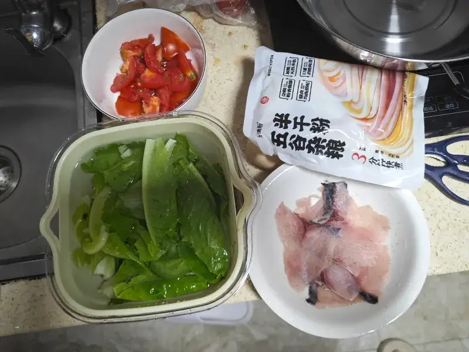
上次用汤达人海鲜面感觉味道一般般！为了解决剩下的草鱼切片，去五谷渔粉官方旗舰店买了一包番茄味的试一试。
买了一个番茄剪刀剪碎，开整！
草鱼切片在冰箱冷冻室里放太久了😭~让豆包老师教一下如何解冻：
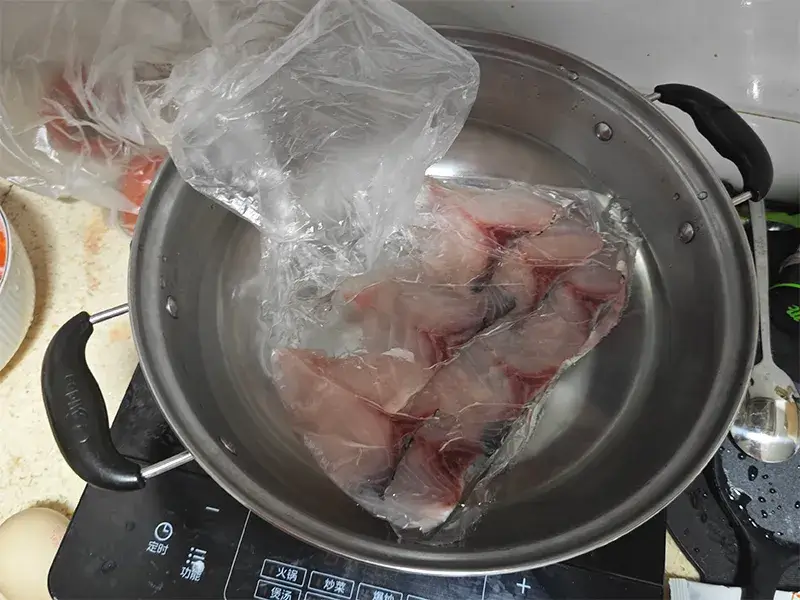
Tip
草鱼切片解冻的方法
草鱼切片冻成块，优先选择自然解冻或冷藏解冻，能最大程度保留鱼肉嫩度，避免营养流失，具体处理方法如下：
快速解冻（着急烹饪，15-20 分钟）
- 把冻鱼块放入密封保鲜袋，排出空气后扎紧。
- 放入装有冷水的盆中（水量没过鱼块），每 5 分钟换一次水，加速解冻。
- 解冻后用厨房纸轻轻吸干鱼肉表面水分，再按原食谱加白胡椒粉去腥即可。
常规解冻（不着急，提前 1-2 小时）
- 提前将冻鱼块从冷冻层取出，放入冰箱冷藏层（0-4℃），静置 1-2 小时至完全解冻。
- 这种方式解冻最温和，鱼肉不易散碎，后续煮制时口感更好。
注意：避免 2 个误区
- 不要直接用热水泡：会导致鱼肉外层变熟、内层仍冻，口感发柴且易滋生细菌。
- 不要反复解冻：解冻后的鱼肉若一次用不完，需立即分装冷冻，反复解冻会破坏鱼肉纤维，降低品质。
效果还可以，接着按照步骤开煮：
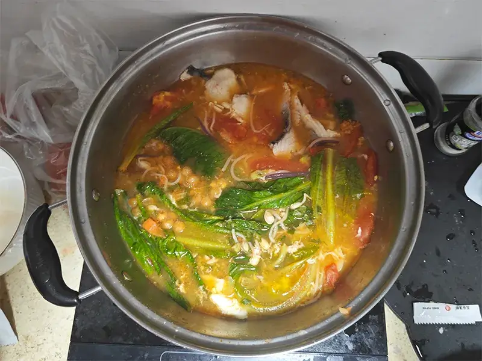
Tip
预处理食材：草鱼切片后加少许白胡椒粉抓匀去腥；罗马生菜洗净撕成小块，西红柿去蒂切块备用。
煮鱼粉：锅中加适量清水（或骨汤）煮沸，放入五谷鱼粉，中小火煮 5-6 分钟至粉变软，捞出过凉水（更筋道），沥干备用。
熬番茄汤底：同一口锅留少许煮粉的水，放入番茄块煮 2-3 分钟至出沙，倒入番茄味料理包，搅拌均匀后煮 1 分钟，制成汤底。
煮鱼和鸡蛋：汤底中依次放入草鱼切片（煮 1-2 分钟至变白熟透，避免煮老）、打入鸡蛋（可做成荷包蛋或打散成蛋花）。
组装出锅：最后放入煮好的五谷鱼粉和罗马生菜，煮 30 秒至生菜变软，即可关火盛出，直接享用。
粉挺有店里的味道的。但是汤没有😭~估计是水还是加多了。
草鱼味道不行，下次试试黑鱼和龙利鱼🤔。
9.6 咖喱饭
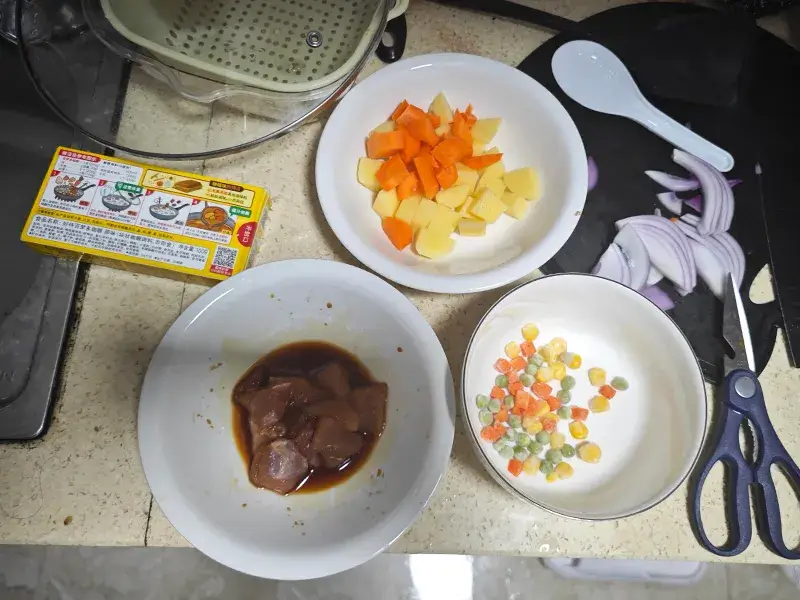
周末要整点复杂的😎！去超市买了洋葱、土豆、瘦肉、胡萝卜和木薯淀粉。
先把饭煮上，然后开始操作。
Tip
用电饭锅煮干饭（白米饭）的核心是米水比例，掌握好就能煮出颗粒分明、软硬适中的饭，具体步骤如下：
淘米
- 取适量大米（按人数估算，通常每人约 50-70g 生米），放入电饭锅自带的内胆中。
- 加冷水没过大米，用手轻轻搓洗 2-3 次（不要过度搓洗，避免流失过多营养），直到水变清澈，最后倒掉淘米水。
加水（关键步骤）
- 加清水至水面没过大米 1-1.5 厘米（新手可参考：手指垂直插入米中，水面刚好没过指节 1/2 处）。
- 若喜欢偏软的饭，可稍微多加一点水；喜欢偏硬、有嚼劲的饭，可少加一点水。
浸泡（可选，提升口感）
- 加水后让大米浸泡 15-20 分钟（尤其陈米，浸泡后煮出的饭更松软），浸泡后无需倒出水。
煮饭
- 将内胆外的水分擦干（避免电饭锅短路），放入电饭锅中，盖紧盖子。
- 选择 “煮饭” 模式（普通电饭锅直接按 “煮饭键”，智能电饭锅选 “标准煮饭”），等待自动完成。
- 煮好后，电饭锅会跳至 “保温” 模式，此时不要立即开盖，焖 5-10 分钟再开盖，米饭会更蓬松、不粘锅底。
盛饭
- 开盖后用饭勺轻轻翻拌米饭，使热气均匀散开，即可盛出食用。
要用刀了！笨手笨脚地切了老半天。
Caution
不要用不锈钢锅炒菜！不然锅会烧焦，赶紧停火换铁锅了。
Tip
食材预处理
- 土豆、胡萝卜去皮切 2 厘米见方的块，洋葱切小块，瘦肉切薄片或小丁，杂菜（如玉米、青豆）提前解冻。
- 瘦肉加 1 勺生抽、半勺淀粉抓匀，腌制 5 分钟（防柴）。
炒香食材
热锅倒油，先放洋葱炒出香味（约 1 分钟），再放入瘦肉炒至变色，接着加土豆、胡萝卜块翻炒 1 分钟，让食材表面微焦。
炖煮 + 加咖喱
加足量热水（没过所有食材 1 厘米），大火煮开后转中小火，盖盖炖 8-10 分钟，直到土豆、胡萝卜用筷子能轻松戳透。
- 关火，放入 1 块咖喱块（约 100g，根据口味调整），搅拌至完全融化，开小火煮 2-3 分钟，期间不断搅拌，让汤汁浓稠（喜欢稀一点可少煮 1 分钟）。
- 最后倒入杂菜，翻炒 10 秒即可关火。
装盘
将浓稠的咖喱浇在米饭上，一份家常咖喱饭就做好了。若喜欢更浓郁的口感，可在最后加 1 勺椰浆或牛奶，风味更柔和。
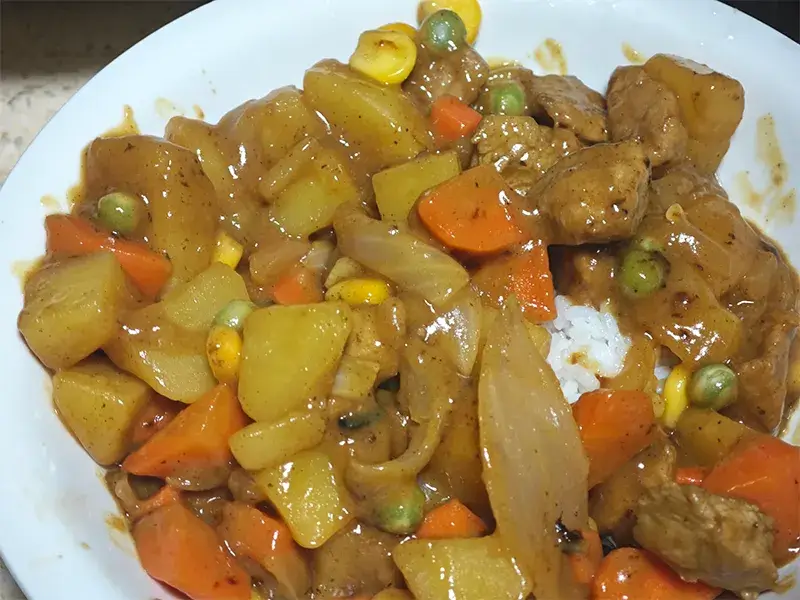
前期吭吃瘪肚，后面还蛮顺利的，味道好吃！就是饭煮少了。
肉切得有点多，是在店里给不了的肉量了。
感谢奶奶赞助的大米和橄榄油😍！
9.7 蘑菇胡萝卜炒肉
这天尝试一下拒绝预制菜，自己搭配调料！
本来想买口蘑的，但是没卖了，拿小杏鲍菇代替了。
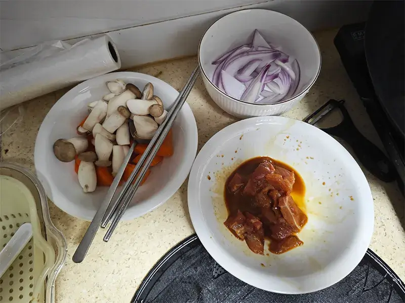
Tip
食材准备
- 主料：瘦肉 150g（切细丝）、杏鲍菇 1 根（切粗丝）、胡萝卜半根（切细丝）、洋葱 1/4 个（切细丝）
- 调料：生抽 1 勺、淀粉 1 小勺、盐少许、食用油、葱花（可选）
烹饪步骤
- 腌制肉丝：瘦肉丝中加 1 小勺淀粉、半勺生抽，抓匀后静置 5 分钟，让肉丝更嫩不柴。
- 预处理食材：锅中烧少许水，放杏鲍菇丝煮 1 分钟，捞出沥干（去除腥味，避免炒时出水）；胡萝卜丝可提前焯水 10 秒，口感更软。
- 翻炒调味：热锅冷油，放葱花爆香，倒入腌好的肉丝，大火快速炒至表面变色，盛出备用。
- 炒香配菜：同一口锅，加少许油，放入洋葱丝炒出香味，再加入胡萝卜丝、杏鲍菇丝，中火翻炒 1 分钟。
- 混合出锅：倒入之前炒好的肉丝，加半勺生抽、少许盐调味，大火翻炒 30 秒，确保食材入味后即可装盘。
不会切丝，切丁凑合下。
刚放肉的时候又焦了，油太少了？

感觉焦得有点多，影响口感😵。
9.7 耗油罗马生菜
之前的罗马生菜放了一周了，表皮发蔫摘掉了，剩下的正常，这天必须吃掉，为此又专门买了一瓶耗油，真是差生文具多~
拍大蒜拍得手忙脚乱的……
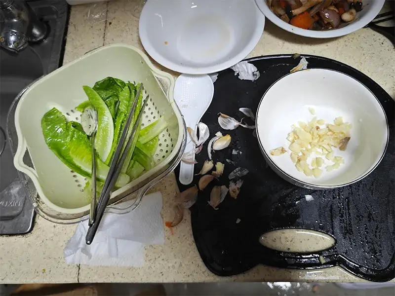
Tip
食材准备
-
罗马生菜：1 棵（洗净撕块、沥干水分）
-
大蒜：5-6 瓣（剁蒜末）
-
食用油：2-3 勺
-
蚝油：1-2 勺（根据口味调整，提鲜关键）
-
盐：少许（比基础版少放，避免过咸）
-
鸡精（可选）：1 小撮（放了蚝油可省略）
烹饪步骤
- 热锅冷油，五成热时放入一半蒜末，小火炒出蒜香（别炒糊）。
- 转大火，倒入罗马生菜快速翻炒 10-15 秒，至生菜微微变软。
- 沿锅边淋入蚝油，再加入剩余蒜末和少许盐，快速翻炒 5 秒至调料裹匀。
- 立即关火盛出，趁热吃能保留生菜脆感和蚝油的鲜味。
小提醒
- 蚝油本身有咸味，盐一定要少放，避免菜品过咸。
- 炒蚝油时别久炒，否则容易糊锅，还会损失鲜味。
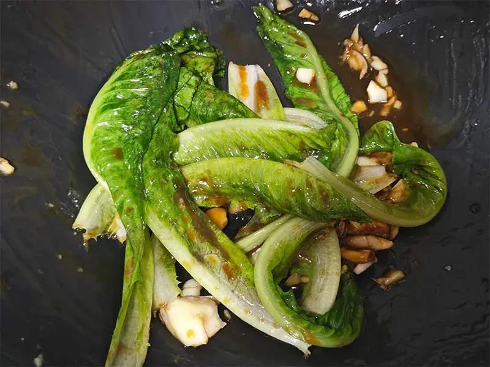
迄今为止还没自己加过盐……要么是预制调料要么是酱油或耗油代替。
味道真的不错！就是觉得耗油放多了有点咸，这天饭又煮得不够多😭。吃完后刷完牙嘴里还是一股蒜蓉味~